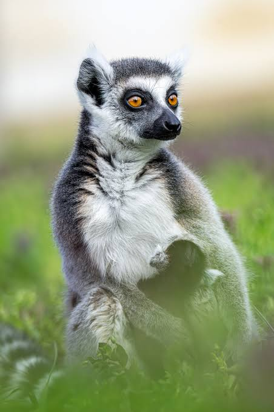
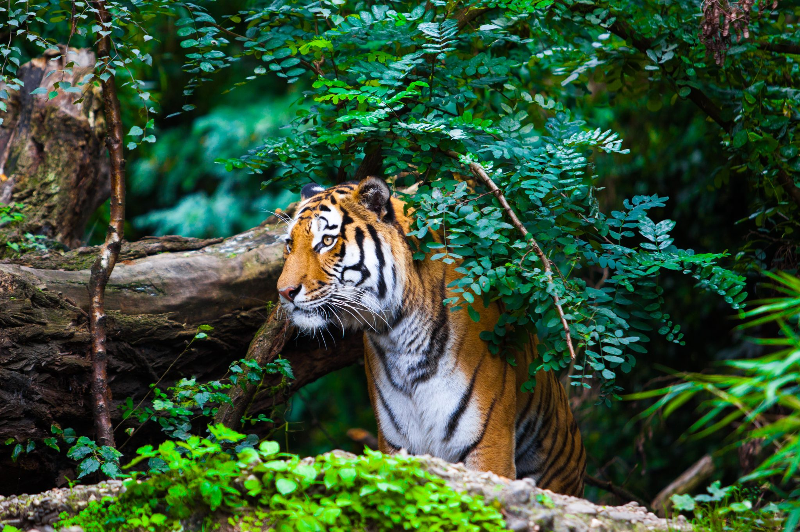
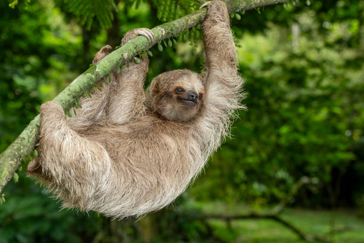
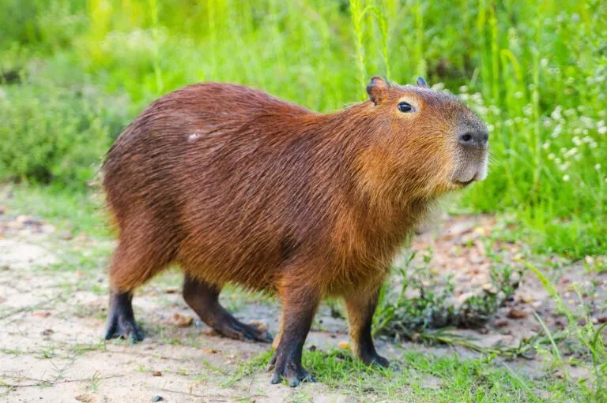
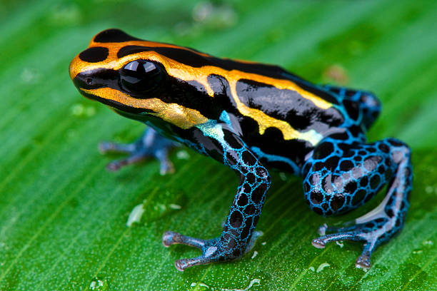
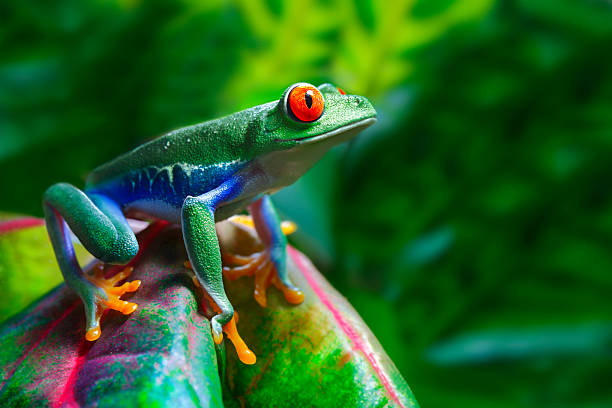
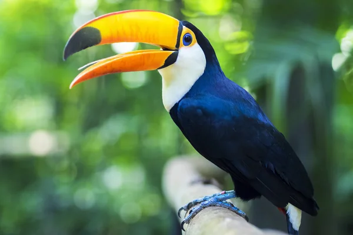
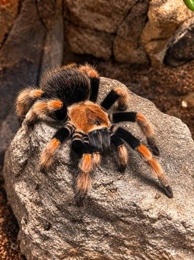

Az esőerdők állatai
Fedezd fel az esőerdők lenyűgöző állatvilágát a lombkorona színes madaraitól a rejtőzködő nagymacskákig, a különleges kétéltűektől a hihetetlen rovarvilágig.
Emlősök
6 fajHüllők
6 fajMadarak
6 fajÍzeltlábúak
6 fajKülönleges állatok
Kiválasztott kategória: Emlősök (6 faj)

Gyűrűsfarkú maki
Madagaszkár trópusi erdőinek jellegzetes csíkos farkú félmajmája. Csapatokban él, nagyon szeret a napon sütkérezni, és ugrándozva közlekedik a fákon.

Jaguár
Az amerikai esőerdők csúcsragadozója. Rendkívül erős az állkapcsa, a teknősök páncélját is át tudja harapni, ráadásul kitűnően úszik a folyókban.

Bengáli tigris
Ázsia trópusi és mangrove erdeiben él. Csíkos bundájával szinte láthatatlanul tud cserkészni a sűrű aljnövényzetben, és remekül úszik.

Háromujjú lajhár
A fák lombkoronájában lógva tölti az egész napot. Nagyon lassan mozog, a bundájában apró algák telepednek meg, ami zöldes álcát ad neki.

Vörös bőgőmajom
A hangja akár 5 kilométerre is elhallatszik a dzsungelben. Különleges torokcsontjával ad ki mély üvöltő hangokat, így jelzi a saját területét.

Kapibara
A világ legnagyobb rágcsálója. Dél-Amerikában a vízparti területeket kedveli, csapatokban legelészik, és ha veszélyt érez, azonnal a vízbe veti magát.

Nyílméregbéka
Alig pár centis, de az egyik legveszélyesebb kétéltű a Földön. Élénk színeivel figyelmezteti a ragadozókat, hogy a bőrének érintése is mérgező.

Pirosszemű levelibéka
Nappal a levelek fonákján alszik összehúzódva, de ha megijesztik, hirtelen kinyitja élénkpiros szemeit, amivel megdöbbenti a támadóját.

Zöld anakonda
A világ legsúlyosabb kígyófaja. A folyókban és mocsarakban leselkedik, ahol a víz felhajtóereje miatt meglepően gyorsan mozog hatalmas teste ellenére.

Párduckaméleon
Szemeit külön-külön tudja forgatni, így 360 fokban lát. Villámgyors nyelvével kapja el a rovarokat, és hangulata szerint változtatja a színeit.

Zöld leguán
A magasabb ágakon szeret sütkérezni a napon. Ha megriasztják, akár tíz méteres magasságból is képes a vízbe ugrani anélkül, hogy baja esne.

Fekete kajmán
Az Amazonas medencéjének legnagyobb hüllője, akár 5 méteresre is megnő. Sötét pikkelyei miatt szinte láthatatlan a zavaros trópusi vizekben.

Tarka tukán
Hatalmas, színes csőre belül üreges és könnyű. Segít elérni a vékony ágakon csüngő gyümölcsöket, és a testhőmérséklete szabályozására is használja.

Ara papagáj
Intelligens, hűséges papagájfaj, a párok egész életükben együtt maradnak. Rendkívül erős csőrével még a kemény héjú magvakat is feltöri.

Hárpia sas
Az egyik legerősebb ragadozó madár a világon. Hatalmas karmaival majmokat és lajhárokat kap fel közvetlenül a fák lombkoronájából.

Smaragd kolibri
Másodpercenként akár 80 szárnycsapásra is képes. Egy helyben lebegve szívja ki a virágok nektárját, és az egyetlen madár, amely hátrafelé is tud repülni.

Kvézál
Közép-Amerika legendás madara, zöld faroktollai akár egy méteresek is lehetnek. Az ősi maják a szabadság jelképeként tisztelték.

Inka kakadu
Feltűnő, rózsaszínes tollazatáról és felmereszthető színes bóbitájáról könnyű felismerni. Nagyon társaságkedvelő madár, a fák odvaiban fészkel.

Góliát madárpók
A világ legnehezebb pókfaja, lábterpesze elérheti a 30 centimétert. A talajban ásott üregekben lakik, és éjszaka vadászik rovarokra, békákra.

Azúrlepke
Szárnyai ragyogó fémeskék színűek, ami a mikroszkopikus pikkelyek fénytöréséből adódik. Repülés közben szinte villódzik a napfényben.

Levélvágó hangya
A kivágott levéldarabokat a föld alatti bolyba viszik, de nem eszik meg őket: táptalajként használják, és speciális gombát növesztenek rajtuk.

Herkulesbogár
Hatalmas, fogós szarvaival az egyik leghosszabb bogár a Földön. A hímek a szarvaikkal küzdenek meg egymással a fák törzsén.

Óriás botsáska
Mesterien álcázza magát: alakja, színe és még a szélben ringatózó mozgása is olyan, mint egy száraz faág, így észrevétlen marad.

Császárskorpió
Fényes, fekete páncélja UV-fény alatt kékesen világít a sötétben. Nappal elrejtőzik a kövek alatt, éjszaka indul vadászni vastag ollóival.
Tudtad?
Az esőerdőkben él a Föld szárazföldi állatfajainak több mint fele, pedig ezek az erdők a bolygó felszínének csak kis részét borítják.
Az esőerdők állatai különleges színekkel, mintákkal és álcázási módszerekkel alkalmazkodtak környezetükhöz, így könnyen elrejtőzhetnek a ragadozók elől.
Amikor leszáll az éjszaka, az esőerdő szinte teljesen átalakul: sok nappal rejtőzködő állat ekkor indul vadászni, táplálékot keresni vagy párt találni.
Az esőerdő állatai rendkívül összetett kapcsolatban állnak egymással. Ha egyetlen faj eltűnik, az akár az egész táplálékhálózatra és számos más élőlényre is hatással lehet.